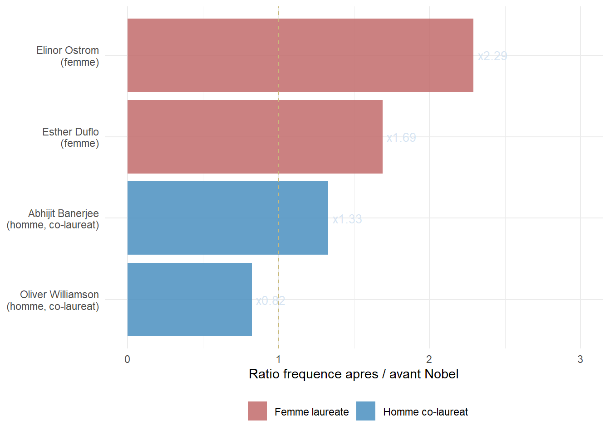
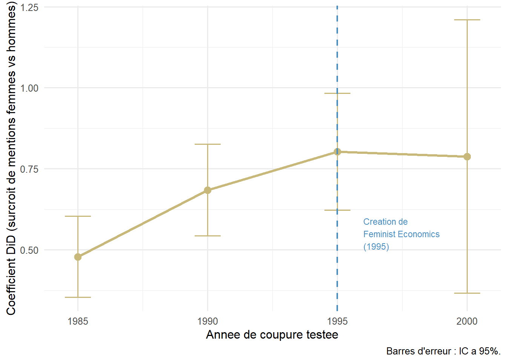

Le rattrapage
Deux mecanismes qui corrigent partiellement l’oubli – mais ne le resorbent pas
Deux mecanismes a tester
Dans la page Resultats, nous avons montre que l’ecart de persistance memorielle entre hommes et femmes ne se resorbe pas spontanement au cours du XXe siecle. Mais deux evenements institutionnels pourraient avoir change la donne :
Mecanisme 1
Le Prix Nobel
Trois femmes ont recu le Nobel d'economie : Ostrom (2009), Duflo (2019), Goldin (2023). Est-ce que le prix provoque un rattrapage de leur frequence de mention ?
-> Voir la page NobelMecanisme 2
La revue Feminist Economics
La revue Feminist Economics est fondee en 1995, institutionnalisant le courant economiste feministe. Est-ce que les femmes economistes sont plus mentionnees apres 1995 qu'avant, relativement aux hommes ?
Methode 1 – L’effet Nobel (rappel)
La methode est expliquee en detail sur la page Nobel. En resume : on compare la frequence Ngram de chaque laureate avant et apres l’annee du prix, et on compare ce ratio a celui de ses co-laureats masculins la meme annee.
Note : Ostrom multiplie sa frequence par 2,3 apres le Nobel, contre 0,82 pour son co-laureat Williamson – qui voit sa frequence baisser, l’attention mediatique s’etant concentree sur Ostrom.
Methode 2 – L’effet de la revue Feminist Economics
Le modele
\[\ln(f_{it}) = \alpha_i + \beta_1 \cdot t + \beta_2 \cdot \text{post1995}_t \cdot \text{femme}_i + \varepsilon_{it}\]
- \(\alpha_i\) : effet fixe individu (capture le niveau moyen de chaque economiste)
- \(\beta_1 \cdot t\) : tendance temporelle commune
- \(\beta_2\) : le coefficient d’interet – le surcroit de mentions pour les femmes apres 1995, par rapport aux hommes
Les resultats
| Annee de coupure | Coefficient | Erreur-type | p-valeur | |
|---|---|---|---|---|
| 1985 | 0.4786 | 0.0641 | 0.00000 | *** |
| 1990 | 0.6842 | 0.0722 | 0.00000 | *** |
| 1995 | 0.8025 | 0.0922 | 0.00000 | *** |
| 2000 | 0.7880 | 0.2151 | 0.00025 | *** |
Note : le coefficient est significatif pour toutes les annees de coupure testees. Il augmente progressivement de 1985 (+0,48) a 1995 (+0,80) puis se stabilise. Cela suggere que le rattrapage s’accelere precisement autour de 1995 – mais qu’un mouvement etait deja en cours depuis les annees 1980, probablement lie a la montee des gender studies dans les universites.

Note : si le coefficient etait stable quelle que soit l’annee de coupure, on ne pourrait pas attribuer l’effet a 1995 en particulier. Le fait qu’il soit maximise autour de 1995 est coherent avec l’hypothese d’un effet de la revue, meme si d’autres facteurs contemporains (developpement d’Internet, institutionnalisation des gender studies) ont probablement joue un role.
Synthese – deux rattrapages, un ecart qui persiste
Nobel : rattrapage fort et ponctuel
Ostrom x2,3 -- Duflo x1,7. Le prix corrige rapidement l'ecart pour les laureates. Mais seulement 3 femmes sur environ 95 laureats depuis 1969.
Feminist Economics : rattrapage lent et progressif
+0,80 log-points apres 1995 (+120% relativement aux hommes). Un mouvement amorce dans les annees 1980 qui s'accelere avec l'institutionnalisation du courant feministe.
Ecart brut : toujours x5,4
Malgre ces deux mecanismes de rattrapage, l'ecart global sur 1950-2000 reste de 5,4. Les rattrapages sont reels mais insuffisants pour combler le deficit accumule.
ImportantEn une phrase
Il existe des mecanismes institutionnels de rattrapage – Nobel et institutionnalisation du courant feministe – mais ils sont trop partiels et trop recents pour combler un ecart de persistance memorielle accumule sur plus d’un siecle.
Comment ca marche en mots simples
On dispose des frequences annuelles Ngram pour 186 economistes sur la periode 1900-2000. Pour chaque annee et chaque individu, on observe combien de fois son nom est mentionne dans les livres.
L’idee est simple : si la creation de Feminist Economics en 1995 a contribue a rehabiliter les femmes economistes dans la memoire collective, on devrait observer que les femmes sont davantage mentionnees apres 1995 qu’avant, et ce plus que les hommes.
C’est exactement ce que mesure une difference-en-differences :
La logique de la difference-en-differences
On compare deux differences :
Difference 1 = freq femmes apres 1995 - freq femmes avant 1995
Difference 2 = freq hommes apres 1995 - freq hommes avant 1995
Effet = Difference 1 - Difference 2
Si l'effet est positif, les femmes ont plus augmente que les hommes apres 1995 -- ce qui suggere un rattrapage lie a l'institutionnalisation du courant feministe.
Pourquoi comparer aux hommes ? Parce que les frequences Ngram augmentent mecaniquement avec le temps – il y a plus de livres publies en 2000 qu’en 1980. Si on regardait seulement les femmes, on confondrait le rattrapage avec cette tendance generale. En comparant aux hommes, on isole ce qui est specifique aux femmes.
Les effets fixes individu : on controle aussi pour le fait que certains economistes sont toujours plus mentionnes que d’autres (Adam Smith sera toujours plus cite que Jane Marcet). On ne regarde que les variations autour de la moyenne de chaque individu.